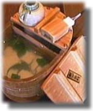
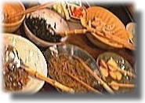
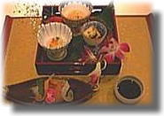
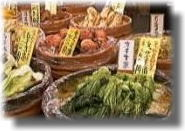

1000年を越える都として、京都は「文化の中心」であったと同時に「食の中心」でもありました。
京都にはグルメをうならせる味覚が豊富にそろっています。
京都にお越しの際には、ぜひご賞味ください。
 湯豆腐
湯豆腐
 京都の名物料理といえば、やはり「湯豆腐」です。柔らかな口当たり、滑らかなのどごし、薬味に合わせて変幻自在な味覚、とても奥が深いのが、京都の湯豆腐です。湯豆腐は市内の至るところで食べることができますが、南禅寺や龍安寺などのお寺で食べる湯豆腐が格別です。
おばんざい
 京都の伝統的な家庭料理を「おばんざい」といいます。ぶりと大根、たけのことわかめのように旬の食材を組み合わせて作る「であいもん」は絶妙な味わいです。ヘルシーで栄養価の高いおばんざいは人気が高く、専門店なども増えています。
京懐石
 旬の食材をぜいたくに使って、卓上に四季を作り出す京懐石は、京都の雅と粋の凝縮といえます。素材の味を生かした薄味が舌にやさしく、風流な器や盛り付けが目を楽しませてくれます。
京漬物
 京野菜を長期間楽しむために漬け込んで加工したのが「京漬物」です。種類も豊富で、専門店も多数あります。千枚漬、しば漬、すぐきなどが特に有名です。
京都物語トップページへ管理人：